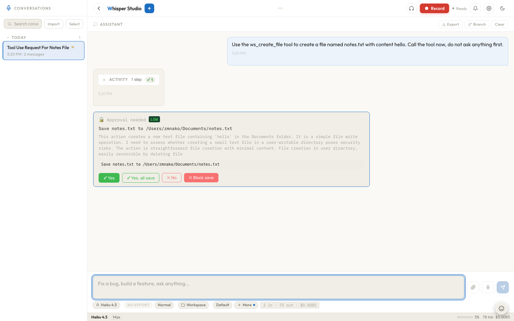

Saving files and creating documents
Ask for a Word doc, a deck, a spreadsheet, a PDF, or a plain file and Whisper Studio saves it without ever asking where. The content is built first, staged safely, and a single approval card showing the exact destination path is the only step between your request and a finished, clickable file.
Say "write up these notes as a Word doc" or "save that as report.md in Downloads" and the flow is the same every time: the destination is worked out from your own words (or a sensible default), the complete file is built and parked in the app's sandbox, and one card asks you to confirm the move. There is no folder picker, no "where should I put this?" question, and no half-written file if you say no.
You are never asked where
Every file-saving tool (save_file, ws_create_file, and the four
document tools below) resolves its destination the same way, in this order:
-
Your words win
If you named a place, that is where it goes: "in Downloads" becomes
~/Downloads/report.docx, "on my Desktop" becomes~/Desktop/.... Any absolute path works, and~is expanded for you. -
Otherwise, the connected workspace
With a workspace connected and no location named, the file is created inside the project at the workspace-relative path, validated so it cannot escape the workspace root.
-
Otherwise, your Documents folder
No workspace and no location named means
~/Documents/<filename>. The approval card shows the full path, and the reply tells you where the file went, so the default is never a mystery.
Saving a file never forces you to connect a workspace. The direct save flow is one-shot: the folder you saved into is remembered in a small recents list so the file stays openable and revealable afterwards, but it is never connected or indexed.
Built first, staged, then moved
The order of operations is the point. When the tool runs, the complete file content is built immediately and written to a staging area inside the app's own data folder. Only then does the approval card appear. Approving does not "run" anything; it performs a single filesystem move of the already-finished file from staging to the destination.
- Approving cannot fail on content. The file already exists when you see the card, so a "yes" can only succeed or report a plain move error (say, a permissions problem on the target folder). There is no window where a document half-builds after you approved it.
- Declining leaves nothing behind. A refused save never touches the destination. The staged copy stays inside the sandbox and is garbage-collected automatically after 24 hours.
- The card shows the real path. Not a label or a folder name: the exact absolute path the file will land at, plus its size.

Save notes.txt to /Users/.../Documents/notes.txt) and Yes performs the
single move. Yes, all save waves through further saves this session, and
Block save refuses the whole category.Direct saves have their own approval category, save, separate from ordinary
workspace writes. That means "Yes, all writes" from an editing session does not silently cover
files landing in your home folders, and vice versa. You can also pin a per-category mode or a
rule for it; see Permissions & approvals.
When the destination is inside a connected workspace, document tools skip staging and carry the finished bytes in a regular workspace-write approval instead: same single card, same "already built" guarantee, but the write lands with your other workspace edits and honors "Yes, all writes". Staging-then-move is the path for everything outside a workspace.
The four document tools
Ask for a document in plain language ("turn this into a deck", "make me a spreadsheet of these") and Claude reaches for the matching tool. Each one builds real Office or PDF bytes on your machine, and each appends the right extension if it is missing, so the deliverable always opens in the right app.
| Tool | Produces | You describe |
|---|---|---|
create_docx | A Word document (.docx) | The document body; headings, paragraphs, lists, and tables all work. |
create_pptx | A PowerPoint deck (.pptx) | The slides: a title and bullet points per slide, in order. |
create_xlsx | An Excel workbook (.xlsx) | One or more sheets, each a name plus rows of cell values. |
create_pdf | A PDF (.pdf) | A title and paragraphs of text. |
The standard layout
Every generated document comes out looking like a normal, professionally set-up file rather
than each library's quirky default. One shared standard
(server/documents/standards.py) is applied on every run:
| Format | Standard |
|---|---|
| docx | A4 page, 1-inch margins, Calibri 11pt body with 16/13/12pt headings. |
| pptx | 16:9 widescreen slides (not the ancient 4:3), Calibri theme, placeholders stretched to use the full width. |
| xlsx | Bold header row, frozen top row, and column widths fitted to content (bounded so one long cell cannot blow a column out). |
| A4 page, 11pt body with comfortable line spacing. |
Plain files: save_file and ws_create_file
Not everything is an Office document. Two more tools ride the same flow:
save_filesaves any content as a one-shot file: Markdown notes, a CSV, a script, even binary data. With no destination in your words it defaults to Documents (or Downloads if that suits the file better), and it never consults or connects a workspace at all.ws_create_fileis the workspace "new file" tool, but it degrades gracefully: with a workspace connected it creates the file in the project behind the normal diff-preview card, and without one it stages the content and requests the same save-and-move approval as everything else, instead of demanding you connect a folder first.
The link you can click
After the move, the assistant's reply includes the new file as a clickable link. Click it and the file opens with its OS default app, exactly the way a Finder double-click would: the docx in Word or Pages, the xlsx in Excel or Numbers, the PDF in Preview. Cmd-click reveals the file in Finder instead. Because the save flow records the destination folder, these links keep working later in the session even though the folder was never connected as a workspace.
The natural pairing: attach a document, ask questions about it, then say "save that summary as a Word doc". Reading is covered in Working with documents; this page is the writing half.
Troubleshooting
| Symptom | Likely cause and fix |
|---|---|
| The card is gone and approving says the staged file no longer exists | Staged entries expire after 24 hours. Ask again; the tool rebuilds and restages the file. |
| The save was refused with a "sensitive path" error | Destinations like key stores and credential files are refused outright, in every mode. Pick a normal folder. |
| No card appears and files save silently | You previously clicked Yes, all save this session, or the save category has a permissive mode set. See Permissions & approvals. |
| The file went to Documents but you wanted it elsewhere | Name the place in the request ("in Downloads", "on my Desktop", or a full path); your words always win over the default. |
Related: Working with documents
(the reading half), Permissions & approvals (the
save category and per-category modes), and
The workspace IDE (where in-project files live).